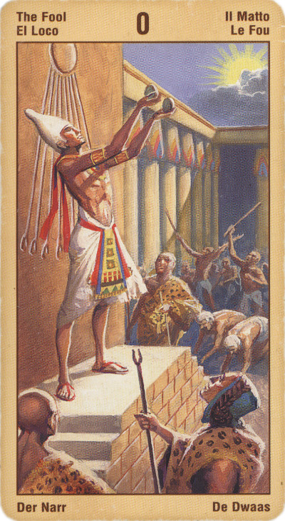

Шут
В астрологическом плане эта карта соответствует Урану, планете неожиданностей и стремления к свободе.
Смысл карты: не упускай возможности отправиться в неизведанное!
Это рассвет весной - время новых начинаний, начало нового цикла.
Хотя вам и может казаться, что вы не знаете, куда идете, вперед вас ведет душа и внутренняя цель.
Иногда, особенно в сочетании с другими картами (помните – “важная информация обязательно повторяется в раскладе дважды и трижды”), это и в самом деле неожиданный поворот событий, сюрприз, как приятный, так и неприятный.
Появление Аркана «Безумец» в личном раскладе означает, что вы попали в ситуацию, когда судьба требует «отработать» прошлые
прегрешения*, прежде чем вам будет предоставлена возможность заново приступить к строительству своей жизни. Как бы вы ни старались, вам вряд ли удастся разглядеть, куда ведет та дорога, по которой вы так быстро идете.
Свернуть с пути также не удастся - ваше время принимать решения уже прошло, и все теперь в руках судьбы. И до тех пор, пока вновь не почувствуете себя хозяином собственной жизни и решений, вы должны будете покорно следовать намеченной дорогой, полагаясь лишь на удачу и покровительство Высших сил.
В случае выпадения вам Аркана «Безумец», рассчитывайте на то, что конец всего дела будет хоть и предсказуемым, но неожиданным. Вы словно выйдете внезапно из долины, полной сырого, непроницаемого тумана, на солнечный свет, где прежние страхи и сомнения покажутся вам смешными и нелепыми.
Поверьте, к каким бы результатам вы в итоге ни пришли - они окажутся для вас наилучшими!
В перевернутом виде – неготовность открыться будущему, цепляние за прошлое, отсутствие свободы или, если сюрприз, то уж точно неприятный. В самом простом смысле – указание на нервное расстройство.
Для бизнесменов Шут в любом положении скорее неблагоприятен, а рекомендация, которую он может дать, проста: уехать, исчезнуть месяца на два – на три.
Шут предупреждает относительно возникновения огромных проблем, являющихся результатом безрассудных и импульсивных действий.
В перевернутом положении символизирует безумство и неосторожность, напрасную трату энергии, времени и сил. Проблемы не решается. Вы в чем-то важном очень небрежны. Ваш выбор может оказаться дурным, решение роковым.
Иногда эта карта символизирует человека, неустанно ищущего смены окружения и занятий, начинающего много дел, но ничего не доводящего до конца.
Кроме того, карта может означать бездумность, прихоти и капризы, экстравагантность, недостаток дисциплины, незрелость, иррациональность в мыслях и поведении, экзальтированность, беззащитность, неумение рассчитывать последствия.